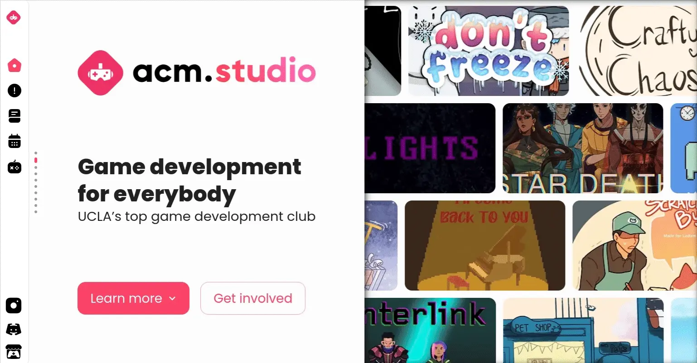

Software Engineering
- Distributed Systems
- Programming Languages
- Compiler Construction
- Data Structures & Algorithms
- Debugging, SCRUM/AGILE
Play with the terminal to discover some SECRET files! Scroll down below for more general information
Haillo! My name is Rynn. My passion is designing creative and interactive experiences using web and game technologies, with unusual means. I seek to unify art, language, and programming into one!

PROJECT 01: art by @zestymachine
A Distributed Location five-node asynchronous TCP server network, told in the version of a game!

A meta-narrative game about memory, recursion, source files, and reality editing through a custom terminal-like interface.
An OCaml parser exploring syntax-prosody mapping and constraint-based alternations in Mandarin third tone sandhi.
A fake OS / virtual filesystem prototype for navigating projects, memories, source files, and worldbuilding fragments.
My research interests include computational linguistics, phonology, prosody, formal grammars, parsing, digital humanities, and tools for making linguistic theory executable and inspectable.
Email: catherinedi@g.ucla.edu
GitHub: github.com/rynndi
LinkedIn: https://www.linkedin.com/in/catherine-di-4168a6245/